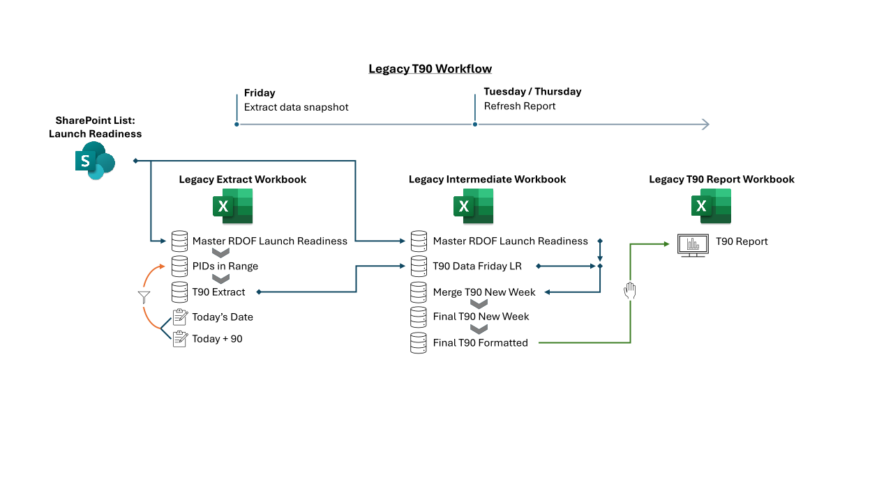
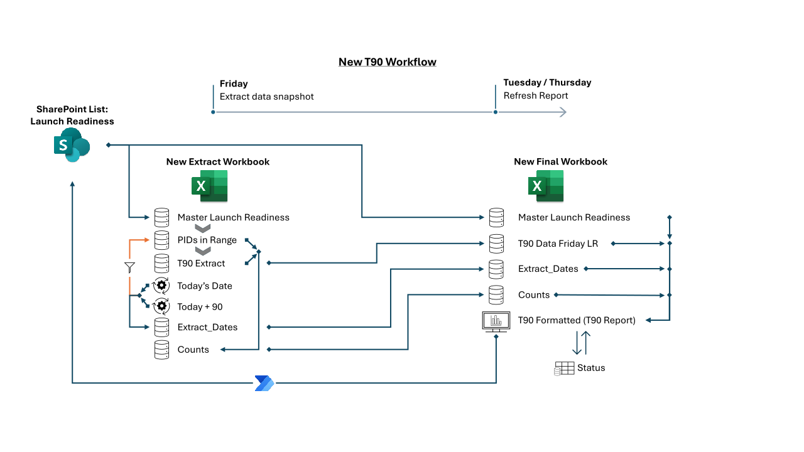

Description
This project reconstructed the T90 (T-minus 90 Days) Report generation process used to monitor projects forecasted to launch within the next 90 days. The purpose of the T90 workflow is to identify projects that may be at risk of delayed activation due to missing or late inputs across operational partners (Legal, Field Operations, Billing, Internet Connectivity, Video Connectivity, and Voice Connectivity) required for launch. The redesign focused on stabilizing and simplifying a multi-workbook Excel and Power Query process that captures a data snapshot on Fridays and compares to refreshed current-state data the following week.
Key enhancements included consolidating and standardizing query logic, optimizing query performance, simplifying dependency calculations, adding logic to identify resolved and forecast-shifted records, and introducing a unique status field with a custom connection between the T90 dashboard and the source SharePoint List, enabling updates made in the Excel table to flow back to the underlying source data. The solution also introduced a method for preserving manual user-entered closure decisions through refreshes by using Excel helper tables and Power Query merge-back logic, allowing the workbook to behave more like an interactive dashboard while retaining end-user inputs. Additional improvements included dynamic retrieval of Friday snapshot dates from the source workbook, summary metrics for total projects within the date range and those at risk, and synchronized redesigns for two parallel reporting paths serving different project populations.
Together, these changes created a more consistent, accurate, and maintainable launch-readiness reporting framework. The finished product eliminated the need for an additional helper workbook and replaced a fragile, manual copy-and-paste workflow with a streamlined and sustainable reporting solution.
Applications Used
- Excel
- Power Query
- Power Automate
- SharePoint
Capabilities Demonstrated
- Data modeling
- ETL and query design
- User-centered reporting
- State preservation through refresh
- Automation integration
- Source system synchronization
Transferable Skills
- Data modeling and transformation
- Reporting and dashboard design
- Process automation
- System integration
- User-centered solution design
- Workflow optimization
Before and After of the Final T90 Report
This comparison highlights the redesign of the final reporting dashboard used to monitor projects approaching launch. Click either image to open a larger view.


The T90 report generation workflow begins with a Friday snapshot of projects forecasted to launch within the next 90 days. That snapshot is used to identify projects at risk based on missing or delayed readiness inputs. The report is then refreshed on Tuesday and Thursday to monitor whether those at-risk projects are progressing toward launch readiness, while preserving user-entered closure decisions and updated status handling.
Legacy Workflow Overview
The legacy T90 process relied on a multi-workbook handoff chain that moved data from an Extract workbook into an Intermediate Template workbook and then into the Final reporting workbook. While functional, that structure created duplicated logic, repeated refresh activity, and several manual transfer points that increased maintenance effort and process fragility.

Legacy T90 Workflow
The inherited reporting process was divided across multiple workbooks, each responsible for a separate stage in the reporting chain. This structure worked, but it introduced unnecessary duplication, repeated refresh steps, and manual handoffs that made the workflow harder to sustain and more difficult to troubleshoot end to end.
Legacy Extract Workbook: Baseline Snapshot Layer
In the legacy process, the Extract workbook used a three-query pipeline to generate the baseline Friday snapshot that anchored the rest of the weekly T90 workflow. It pulled source data from SharePoint, isolated the full 90-day project population, and narrowed that set to the projects considered at risk for dashboard reporting.
How the legacy Extract Workbook functioned:
- Pull raw data from the SharePoint source list
- Clean and reshape the source data into a master readiness dataset
- Calculate a high-level readiness/date-risk flag for each project
- Filter the master dataset to projects within the current T90 window
- Further filter that in-range population to the projects considered at risk
- Output the resulting extract as the Friday baseline snapshot for downstream use
Query Code


Legacy Intermediate (Template) Workbook: Weekly Refresh and Manual Handoff Layer
In the legacy process, a separate template workbook was used as an intermediate refresh layer between the Friday Extract snapshot and the Final dashboard. This workbook partially refreshed current-state data during the week, but still required manual cleanup, formatting, and copy/paste steps before the Final workbook could be updated.
How the legacy template workflow functioned:
- Pull in the Friday T90 snapshot from the Extract template file
- Pull in the current Launch Readiness data from SharePoint
- Merge old snapshot PIDs to current source data
- Reshape and calculate checks for the updated week
- Format for dashboard use
- Manually clean / manually format / manually copy into the Final workbook
Query Code


Legacy T90 Report Workbook: Manual Report Assembly and Refresh Layer
In the legacy process, the T90 Report workbook was updated through a largely manual weekly routine that depended on copy/paste transfers from the intermediate workbook, repeated worksheet duplication, manual filtering and cleanup, hand-applied formatting, and manual entry of summary dates and counts. What is now handled automatically through Power Query, pull-through tables, and conditional formatting previously required a time-consuming sequence of repetitive user actions each reporting cycle.
How the legacy T90 Report functioned:
- Refresh the intermediate workbook and manually remove records whose updated forecast dates had moved outside the active T90 range
- Duplicate the previous report tabs in the T90 Report workbook to create new weekly report tabs for each reporting path
- Update the worksheet names to reflect the current extract date and refresh date
- Manually transfer the refreshed data into the new report tabs from the intermediate workbook
- Manually clean, filter, and sort the report output, including removing closed records and ordering by forecast date
- Manually apply cell formatting and enter summary counts and date values that are now generated automatically in the redesigned solution
Query Code
Redesigned Workflow Overview
The redesigned T90 process consolidates the reporting chain into a more direct and maintainable structure. Instead of routing data through an intermediate workbook and relying on manual copy-forward steps, the new process keeps the Friday snapshot logic in the Extract workbook and pulls both the snapshot and refreshed source data directly into the Final workbook for reporting.

Redesigned Workflow
The redesigned workflow keeps the Friday snapshot generation in the Extract workbook but restructures the process so the Final workbook can directly consume both the weekly snapshot and refreshed source data. This creates a shorter, clearer reporting path and reduces the need for duplicate logic across files.
New Extract Workbook: Dynamic Snapshot and Metrics Layer
In the redesigned process, the Extract workbook was rebuilt as a cleaner and more modular snapshot layer that automatically defines the current T90 reporting window, isolates in-scope and at-risk projects, and produces reusable summary metrics for the Final dashboard. Compared with the legacy version, it requires less maintenance, uses dynamic date logic, and supports downstream reporting more directly.
How the new Extract workflow functions:
- Pull and standardize current Launch Readiness data from SharePoint
- Calculate the core readiness/date-risk status in a simplified base query
- Dynamically define the reporting window using current-date parameter queries
- Filter to projects forecasted within the next 90 days and not yet activated
- Isolate the subset of in-range projects with readiness issues or missing required dates
- Generate reusable counts and reporting-window dates for direct pull-through into the Final dashboard


Query Code


New Final Workbook: Consolidated Dashboard and Status Tracking Layer
The redesigned Final workbook is the core of the new reporting process. Rather than waiting for a manually prepared handoff from an intermediate file, it now pulls the Friday Extract snapshot directly from the Extract workbook and combines it with refreshed current-state Launch Readiness data from SharePoint.
This allows the Final workbook to serve as a consolidated reporting layer where dashboard output, closure logic, helper-query support, and user-entered status preservation are handled together in a more stable and maintainable design.


Query Code


Key Improvements in the Redesigned Process
The redesigned T90 solution improved both the technical structure of the reporting process and the end-user experience of maintaining the dashboard week over week.
- Removed the intermediate workbook dependency. The Friday snapshot now flows directly from the Extract workbook into the Final workbook, eliminating a separate staging file and a manual handoff step.
- Consolidated reporting logic. Comparison logic, display formatting, closure handling, and user-facing dashboard preparation were brought together into a more centralized Final workbook design.
- Improved query focus and maintainability. Source-loading and transformation logic were streamlined so queries pulled the fields actually needed for reporting and reduced unnecessary complexity.
- Added reusable support outputs. Extract dates and counts were exposed as query-driven outputs and pulled directly into the dashboard, reducing manual maintenance.
- Preserved user-entered closure decisions across refreshes. Helper queries and merge-back logic created a durable pattern for retaining manual status handling during automated refresh cycles.
- Enabled source-system synchronization. A custom write-back field created a more interactive connection between the dashboard and the underlying SharePoint source data.
Outcome
The finished redesign created a more consistent, accurate, and sustainable launch-readiness reporting framework. It reduced file sprawl, shortened the reporting path, improved visibility into project status, and made the Final workbook behave more like an interactive dashboard rather than a static downstream report.
By consolidating logic, reducing manual maintenance, and preserving user inputs through refreshes, the new structure turned a fragile multi-workbook process into a more reliable and maintainable reporting solution.